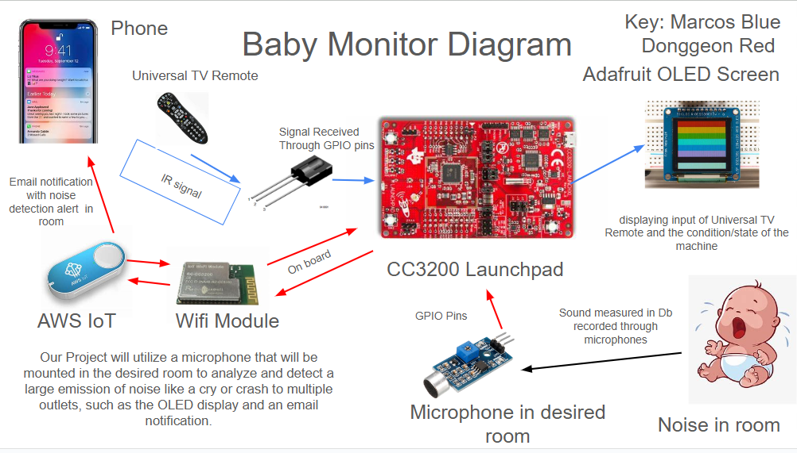
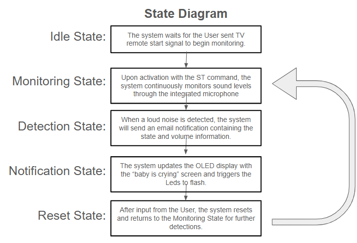
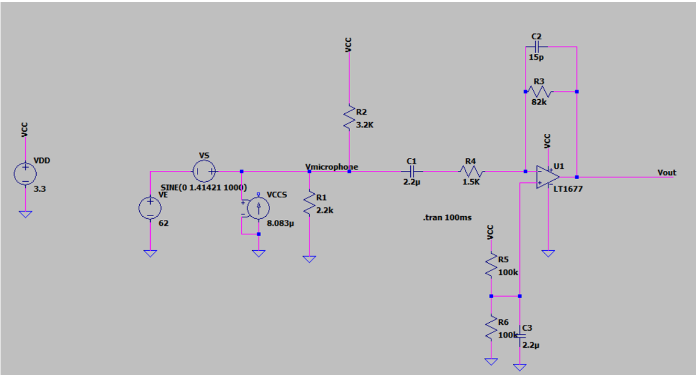
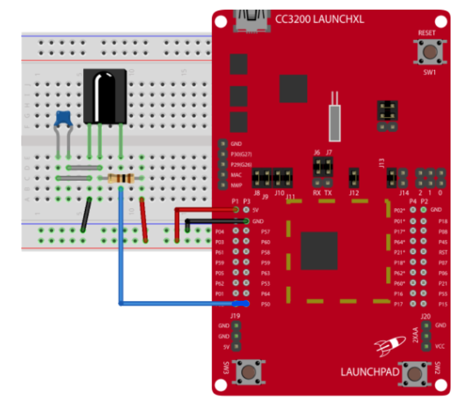

Final Project: Baby Monitor utilizing integrated microphone and CC3200 Launchpad
Marcos Alvear and Donggeon Kim
Description
This project aims to prototype a device that utilizes a simple microphone that will be integrated with an external circuit that will be mounted in a corner of a room to analyze and notify the user of a loud noise/cry. The system leverages the CC3200 Launchpad for processing and is the center of communication between all the parts of the system like the OLED screen, the TV remote User input, and the email push notifications. Utilizing the CC3200’s onboard WiFi module we will communicate with AWS IoT for email notifications that will contain the machine states and volume detected level. This information will also be displayed on an OLED screen using SPI communication and will be the GUI for the User to interact with the system. The user will interact with the device using a Universal TV remote that will interact with the system via an IR signal receiving circuit, making the system an easy to use and set up system that can be utilized in a family home.
Design
Functional Specification
The high-level behavior of the product is represented through a state machine. The system transitions through states based on the sound signals detected by the microphones, processing these signals to determine the sound’s location.
Idle State: The system waits for the User sent TV remote start signal to begin monitoring.
Monitoring State: Upon activation with the ST command, the system continuously monitors sound levels through the integrated microphone.
Detection State: When a loud noise is detected, the system will send an email notification containing the state and volume information.
Notification State: The system updates the OLED display with the “baby is crying” screen and triggers the LEDs to flash.
Reset State: After input from the User, the system resets and returns to the Monitoring State for further detections.
System Architecture
The architectural block diagram (refer to the provided diagram) outlines the main components of the system:
CC3200 Launchpad: The core processing unit, handling sound signal processing and communication.
Microphone: Integrated microphone placed in the room to capture sound.
OLED Display: Displays the state of the machine in the program and is the GUI for users.
WiFi Module: Onboard the CC3200 Launchpad, used for sending email notifications via AWS IoT.
IR signal Module: The Universal TV remote sends signals to the IR receiver, used for sending start and stop commands to the device.
Each component interacts as follows:
The CC3200 Launchpad acts as the head of the system as all information between parts passes through various communication methods.
The OLED display acts as the GUI terminal for the User to interact with the system and to understand which state the machine is in.
The IR signal Module captures signals sent by the universal TV remote controller to receive input from the User for the system.
The microphone captures sound levels and sends the data to the CC3200 Launchpad through the ADC input pins.
The WiFi module that is embedded on the board communicates with AWS IoT to send an email notification with the state and volume information.

A High level block diagram showing how each of the parts of the system interact with one another

A State Diagram showing how the system will flow through its high-level behavior
Implementation
On the hardware side, we connected all the necessary materials. Specifically, we connected the IR module for the remote controller to one of the GPIO pins of the CC3200 launchpad, the SPI pins of the CC3200 Launchpad (in this case, you don’t need to connect the MISO pin since they are not communicating; just the master (launchpad) sends messages to display OLED), the microcontroller to one of the ADC pins of the launchpad, and the WiFi module to connect to AWS, which is already implemented in the CC3200 launchpad.
To use the microphone, we implemented the circuit using an op-amp, resistor, and capacitor. Also, since the maximum input voltage for the CC3200 Launchpad ADC pin was 1.8V, we used the op-amp to control the maximum output voltage from the microphone.
Circuit Diagram for microphone:

Circuit Diagram for microphone
On the software side, we implemented the program for the IR module, OLED, microphone, and HTTP server to AWS. For the IR module for the remote controller, we captured all signal data from the remote controller when a button was pressed, then decoded the signals to figure out which button was pressed. After decoding them, we used the GPIO handler to interrupt whenever the button is pressed. For the OLED, we programmed for communication through the SPI protocol. We decided the pins of the OLED, then programmed according to the order of SPI pins to send messages to the OLED. Then we programmed to display on the OLED. For the microphone, we programmed to convert to digital from the ADC pin. We found the voltage value when the noise sounds were going on, then whenever it detected a loud sound it sent a message to AWS to send an email. For AWS, we built (IoT) Internet of Things on AWS then downloaded the keys to let the CC3200 launchpad access the IoT. Whenever loud sounds were detected, the CC3200 launchpad put the message on AWS then AWS sent an email for the loud sound notification.
The project will be implemented in phases with the following goals:
Minimal Goals
Successfully detect sound levels from the microphone.
Display detected sound location on the OLED screen.
Target Goals
Implement accurate location detection of sound within the room.
Send email notifications with sound location information.
Stretch Goals
Enhance the system to filter out background noise and detect only significant sounds.

State Diagram
Challenges
During the implementation of the baby monitor system, we faced several challenges that required thoughtful analysis and problem-solving strategies. This section discusses these challenges, the observations made, the thought processes involved, and the steps taken to address them.
Microphone Voltage Compatibility
One of the initial challenges we encountered was the voltage compatibility between the microphone module and the ADC pins on the CC3200 Launchpad. The microphone module we intended to use operated at a maximum voltage of 5V, whereas the ADC pins on the CC3200 Launchpad could only handle a maximum voltage of 1.8V. Connecting the microphone directly to the ADC pins risked damaging the Launchpad.
Solution: To address this issue, we decided to use a voltage limiter circuit to cap the voltage at 1.8V before feeding the signal into the ADC pins. This involved using components to ensure the voltage remained within safe limits. After implementing the voltage limiter, we successfully interfaced the microphone with the CC3200 without exceeding the ADC pin voltage threshold.
ADC Pin Functionality
Another significant challenge was the inconsistent functionality of the ADC pins. Some ADC pins did not appear to work correctly, leading to unreliable sound level readings from the microphone. This inconsistency hindered our ability to obtain accurate sound data.
Solution: We conducted a systematic troubleshooting process to identify functional ADC pins. This involved testing each ADC pin individually with a known voltage input and observing the output. Pins that did not provide accurate readings or any readings at all were ruled out. We eventually identified a set of functional ADC pins that would work for the individual microphone but no other microphones could be incorporated. We then adjusted our circuit design to use only the verified ADC pins, which improved the reliability and functionality of our sound detection.
Flashing the Program to the CC3200 Board
Flashing the program to the CC3200 board presented another major challenge. Initially, the program would only run correctly when executed directly from the laptop. Attempts to flash the program to the board for standalone operation were unsuccessful, which limited the system’s usability.
Solution: After numerous troubleshooting attempts, including verifying connections, updating firmware, and re-flashing the program, we concluded that the issue might lie with the hardware itself. We decided to use a new CC3200 board, which resolved the issue. The program flashed correctly and ran independently of the laptop. We hypothesized that the initial board might have had hardware defects, such as faulty flash memory or corrupted bootloader firmware, which prevented successful flashing.
General Debugging and Integration Issues
Throughout the project, we encountered various debugging and integration issues, such as synchronization problems between the microphone input and the OLED display updates, and occasional failures in sending notifications through AWS IoT due to network errors.
These challenges provided valuable learning experiences and highlighted the importance of thorough testing, systematic troubleshooting, and adaptability in project development. Despite the difficulties, we successfully developed a functional baby monitor system that met the project requirements.
Future Work
While the current implementation of the baby monitor system successfully detects loud noises and sends notifications, several additional features and improvements can enhance its efficiency and performance.
Additional Microphones
Integrating more microphones into the system can significantly improve the accuracy of sound detection and location. With a greater number of microphones, the system can better triangulate the sound source, providing more precise information about the location of the noise within the room. This enhancement would require additional ADC channels on the CC3200 Launchpad and more sophisticated signal processing algorithms to analyze the inputs from multiple microphones.
3D-Printed Casing
A custom 3D-printed casing to house the electronics can provide better protection and organization for the components. The casing can be designed to include proper ventilation for the microphone and IR receiver, as well as secure mounting points for the CC3200 Launchpad and OLED display. Additionally, a well-designed casing can improve the aesthetic appeal of the device, making it more suitable for use in a family home environment.
Displaying Volume Levels on OLED
Adding functionality to display real-time volume levels on the OLED screen can provide users with immediate visual feedback on the noise detected by the system. This feature would involve updating the OLED display code to include a graphical representation of the volume levels, such as a bar graph or numerical readout. This enhancement can help users quickly assess the noise environment in the room and understand the severity of the detected sounds.
Advanced Sound Filtering
Implementing advanced sound filtering algorithms can improve the system’s ability to distinguish between background noise and significant sounds, such as a baby’s cry. Techniques such as noise reduction, adaptive filtering, and machine learning-based sound classification can be explored to enhance the reliability of sound detection. This improvement would require additional computational resources and potentially more advanced processing capabilities on the CC3200 Launchpad or an auxiliary processing unit.
Integration with Smart Home Systems
Future work could also explore the integration of the baby monitor system with existing smart home ecosystems, such as Amazon Alexa or Google Home. This integration can enable voice commands to control the system and allow notifications to be sent through smart home devices. Additionally, the system could be configured to trigger other smart home actions, such as turning on lights or playing a lullaby when a loud noise is detected.
By incorporating these additional features and improvements, the baby monitor system can become a more robust, user-friendly, and efficient solution for monitoring a baby’s environment and providing timely notifications to caregivers.
Bill of Materials
The anticipated materials and their costs are listed below:
Bill of Materials
Component
Cost
Source
CC3200 Launchpad
$0.00
Class Provided
OLED Display
$0.00
Class Provided
IR Circuit and Remote Control
$0.00
Class Provided
Microphone
$1.25
Amazon
Miscellaneous (Wires, Breadboard, etc.)
$10.00
Amazon
The microphone module of the project
Demo Video
Below is a demonstration video of our final project: